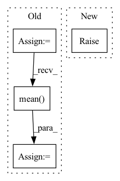

Pattern ID :32446

Before Change
x_denoised = self.denoise_fn(x_noisy, sigmas=sigmas, **kwargs)
// Compute weighted loss
losses = F.mse_loss(x_denoised, x, reduction="none")
losses = reduce(losses, "b ... -> b", "mean")
losses = losses * self.loss_weight(sigmas)
loss = losses.mean()
return loss
After Change
raise NotImplementedError("Diffusion class missing denoise_fn")
def forward(self, x: Tensor, noise: Tensor = None, **kwargs) -> Tensor:
raise NotImplementedError("Diffusion class missing forward function")
class VDiffusion(Diffusion):
In pattern: SUPERPATTERN
Frequency: 3
Non-data size: 4
Instances
Fragment ID: 94610915
Project Name: archinetai/audio-diffusion-pytorch
Commit Name: 68da808cd7e5acb5c571cf14ccefecb3ddceec5b
Time: 2022-10-08
Author: flavio.schneider.97@gmail.com
File Name: audio_diffusion_pytorch/diffusion.py
M Class Name: Diffusion
N Class Name: Diffusion
M Method Name: forward(3)
N Method Name: forward(3)
M Parent Class: nn.Module
N Parent Class: nn.Module
M File Name: audio_diffusion_pytorch/diffusion.py
N File Name: audio_diffusion_pytorch/diffusion.py
M Start Line: 310
M End Line: 329
N Start Line: 109
N End Line: 109
'>
Before Change
self._resampler = T.Resample(sampling_rate, self.sampling_rate)
array = self._resampler(array)
sampling_rate = self.sampling_rate
array = array.numpy()
if self.mono:
array = array.mean(axis=0)
return array, sampling_rate
After Change
// flake8: noqa
import librosa
except ImportError as err:
raise ImportError(
"Your version of `torchaudio` (>=0.12.0) doesn"t support decoding "mp3" files on your machine. "
"To support "mp3" decoding with `torchaudio>=0.12.0`, please install `ffmpeg>=4` system package "
"or downgrade `torchaudio` to <0.12: `pip install "torchaudio<0.12"`. "
"To support decoding "mp3" audio files without `torchaudio`, please install `librosa`: "
"`pip install librosa`. Note that decoding will be extremely slow in that case."
) from err
// try to decode with librosa for torchaudio>=0.12.0 as a workaround
warnings.warn("Decoding mp3 with `librosa` instead of `torchaudio`, decoding is slow.")
try:
'>
Fragment ID: 94610917
Project Name: huggingface/datasets
Commit Name: 142404f9ce8fe4e7a72e8c59be70a012b6f707cd
Time: 2022-09-20
Author: polina@huggingface.co
File Name: src/datasets/features/audio.py
M Class Name: Audio
N Class Name: Audio
M Method Name: _decode_mp3(2)
N Method Name: _decode_mp3(2)
M Parent Class:
N Parent Class:
M File Name: src/datasets/features/audio.py
N File Name: src/datasets/features/audio.py
M Start Line: 290
M End Line: 308
N Start Line: 288
N End Line: 319
'>
Before Change
actor_critic_output.distributions.log_probs(expert_actions)
).mean()
elif "expert_policy" in batch["observations"]:
expert_policies = batch["observations"]["expert_policy"]
total_loss = (
-(actor_critic_output.distributions.log_probs_tensor * expert_policies)
.sum(-1)
.mean()
)
else:
raise NotImplementedError(
"Imitation loss requires either `expert_action` or `expert_policy`"
After Change
* actor_critic_output.distributions.log_probs(expert_actions)
).sum() / torch.clamp(expert_successes, min=1)
elif "expert_policy" in batch["observations"]:
raise NotImplementedError()
// expert_policies = batch["observations"]["expert_policy"]
// total_loss = (
// -(actor_critic_output.distributions.log_probs_tensor * expert_policies)
'>
Fragment ID: 94610908
Project Name: allenai/allenact
Commit Name: 8835da631f1f04ccfe36eb535eed90ab8b88526a
Time: 2020-01-17
Author: lucaw@allenai.org
File Name: onpolicy_sync/losses/imitation.py
M Class Name: Imitation
N Class Name: Imitation
M Method Name: loss(3)
N Method Name: loss(3)
M Parent Class: AbstractActorCriticLoss
N Parent Class: AbstractActorCriticLoss
M File Name: onpolicy_sync/losses/imitation.py
N File Name: onpolicy_sync/losses/imitation.py
M Start Line: 19
M End Line: 29
N Start Line: 19
N End Line: 41